| Benefit | Percent of families | Average amount |
|---|---|---|
| All government transfers | 95.1 | $13,969 |
| Federal child benefit | 21.5 | $6,166 |
| Provincial child benefit | 12.0 | $2,349 |
| GST credit | 51.8 | $692 |
| Social assistance | 8.2 | $11,270 |
| Canada Workers Benefit | 11.5 | $1,347 |
| Federal refundable tax credits | 52.6 | $677 |
| Old Age Security | 26.4 | $10,122 |
| Guaranteed Income Supplement | 10.2 | $6,900 |
| Source: Canadian Income Survey (2022). Census families; average amount among families receiving the benefit. | ||
Labour Supply and Income Support Programs
EC306- Wages and Employment
Justin Smith
Wilfrid Laurier University
Fall 2026

Goals of This Section
Goals of This Section
In this section we will:
- Describe the main income support programs in Canada
- Use the labour supply model to evaluate a policy, step by step
- Analyze the work incentives of demogrants, social assistance, and negative income taxes
- Analyze wage subsidies and refundable tax credits like the Canada Workers Benefit
- Examine how economists measure these effects, including with experiments
Income Support Programs in Canada
Income Support and the Social Safety Net
Key Definitions
Income support programs: cash transfers meant to guarantee a minimum standard of living to people with low income, the core of Canada’s social safety net
Means-tested: eligibility depends on income or wealth
- Some programs target low income that is permanent, others low income that is temporary
- Social insurance is a separate group: EI, CPP, disability
- It pays out based on past contributions, not current need, and we cover it in Chapter 5
- Both are income maintenance programs: they support incomes, and they change how much people choose to work
- That is the tension in this chapter: support versus work incentives
Government Transfers in Canada, 2022
In 2022, 95% of Canadian families received at least one government transfer
Issues in Program Design
Universal vs. Targeted Programs
- Universal: easy to implement but expensive
- Targeted: benefits only those in need but costly to administer
- Canada swapped the universal UCCB for the income-tested CCB in 2016
Work Disincentives
- Some programs reduce incentive to work
- Example: welfare benefits can encourage labour force dropout for those with strong preference for leisure
Permanent vs. Transitory Income Loss
- Different situations require different program designs
- Temporary layoff → short-term support
- Long-term disability → longer support + reintegration costs
iClicker Question
Which of these is a means-tested income support program, rather than social insurance or a universal payment?
A) Ontario Works payments to a single adult with no other income
B) EI benefits for a worker laid off from a plant
C) A CPP retirement pension
D) The UCCB’s $100 a month for a child under 6
E) Workers’ compensation after a workplace injury
Demogrants and Social Assistance Programs
Using the Model to Evaluate a Policy
- Same tool as Chapter 3: comparative statics, comparing choices before and after a change
- Policy rarely changes what people like; it changes what they can have
- So the action is in the potential income constraint, not the indifference curves
- Every program in this chapter gets the same three steps:
- Draw the constraint without the policy
- Draw the constraint with the policy
- Given preferences, compare the chosen bundles
Key Definitions
Partial equilibrium effects: how the people a program reaches respond, holding wages and everything else fixed
General equilibrium effects: the knock-on effects once the program works its way through the whole economy
Four Standard Income Support Programs
We will examine four policy approaches:
- Demogrants – Fixed payment to a demographic group, such as everyone over 65, not means-tested
- Social assistance (welfare) – Tops up income to a threshold for those with little else, clawed back dollar-for-dollar with earnings
- Negative Income Tax (NIT) – A guarantee clawed back at a rate < 100% as earnings rise
- Wage Subsidies – Addition to the wage rate
Demogrant: Theory
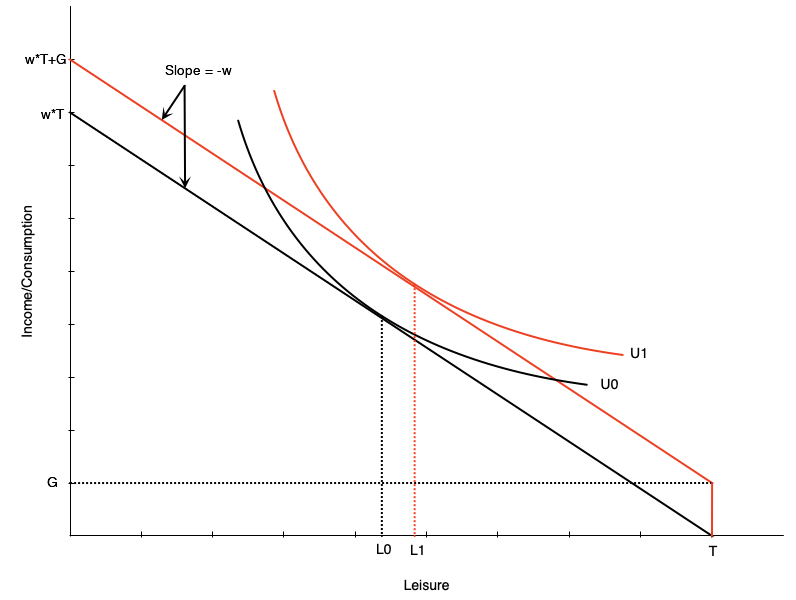
How it works:
- Unconditional lump sum transfer \(G\)
- Shifts budget line up parallel
- Wage unchanged → pure income effect
Labour supply impact:
- If leisure is normal → optimal leisure rises
- Reduces hours worked
- Raises reservation wage → some may quit
Work Incentive Effect
Unambiguously negative
Demogrants in Canada
Old Age Security (OAS)
- Monthly benefit for people 65 and over who meet residency rules
- Not a pure demogrant: it is taxed back from high-income seniors
- Together with the Guaranteed Income Supplement, more than $76 billion in 2024
Universal Child Care Benefit (UCCB)
- Paid to families with children from 2006 to 2016, whatever their income
- Started at $100 a month per child under 6
- From 2015: $160 a month under 6, $60 a month aged 6–17
- Taxable, so lower-income families kept more of it: not a pure demogrant either
- Replaced in 2016 by the income-tested Canada Child Benefit (CCB)
iClicker Question
The UCCB paid families $100 a month per child under 6, whatever their income and whether or not they worked. Assuming leisure is a normal good, what does the labour supply model predict for a working mother’s hours?
A) More hours, because the money helps pay for child care
B) Ambiguous, because the income and substitution effects pull in opposite directions
C) No change, because the payment does not depend on whether she works
D) Fewer hours, through an income effect only
E) Fewer hours, through a substitution effect
Social Assistance: Budget Constraint
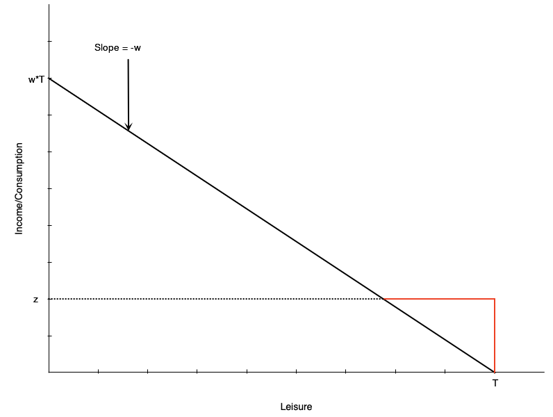
Budget line structure:
- Black line: original budget (leisure at \(L_0\))
- Red then black: with social assistance up to the threshold \(z\)
Key features:
- Grant \(G = z\) at zero hours of work
- Reduced $1 for each $1 earned
- Equivalent to 100% tax rate on earnings
- Income stays at \(z\) until earnings reach \(z\)
- After that, earn wage \(w_0\) per hour worked
Social Assistance: No Effect Case
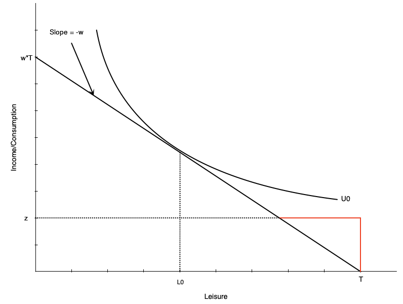
For some workers, welfare has no effect:
- Person working \(H_0\) hours before benefit
- Still maximizes utility at \(H_0\) hours after
- Generally occurs with people already working many hours
Social Assistance: Work Disincentive Case
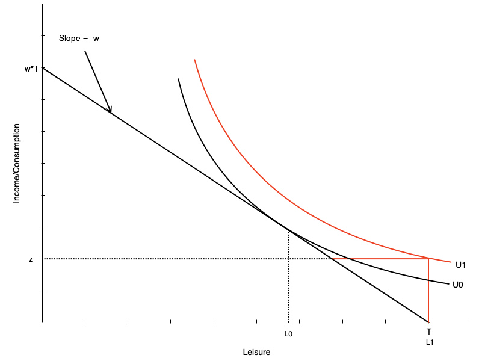
Others face strong work disincentive:
- Person chooses zero hours after welfare benefit
This occurs when:
- Welfare benefit is generous
- Individual places high value on leisure
Work Incentive Effect
This is the problematic effect of welfare programs
iClicker Question
Social assistance guarantees $733 a month, clawed back dollar for dollar with earnings. Maya earns $600 a month working part time. If she qualifies, what does the model predict?
A) She keeps working and gets a $133 top-up, so her income rises to $733
B) Nothing changes, because she was already working
C) She works more hours, to earn her way off assistance
D) We can’t tell without knowing whether leisure is a normal good
E) She stops working entirely
Negative Income Tax: Overview
Key Definition
Negative income tax (NIT): welfare program where benefit reduced at rate < 100% of earnings
- Example: guarantee \(z\) of $10,000, reduced by 50¢ per dollar earned
Advantages
Provides income support with fewer work disincentives. Still maintains incentive to work since benefit reduces slowly.
How it relates to basic income:
- A targeted basic income guarantee (BIG) works like an NIT (or like welfare, if the clawback is 100%)
- A universal basic income (UBI) pays everyone the same amount, so it works like a demogrant
Negative Income Tax: Budget Constraint
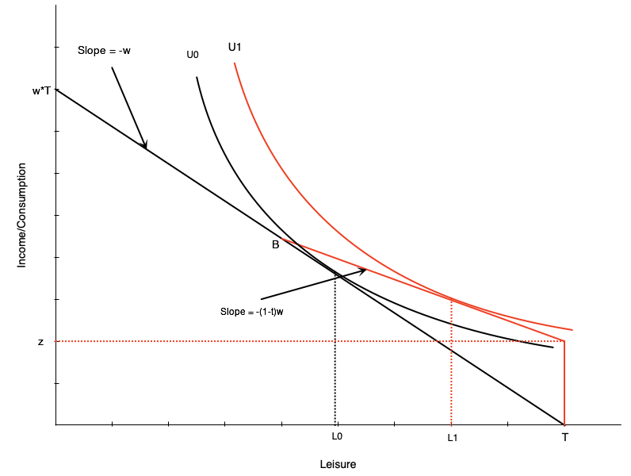
NIT has two components:
- Guarantee \(z\) at zero hours of work
- Implicit tax rate \(t\) on earnings, until the benefit is gone at the breakeven point \(B\)
Effect on labour supply:
- Pivots budget line up vs. pure welfare
- Work hours reduced from \(H_0\) to \(H_1\)
- Person still works some hours
Work Incentive Effect
Smaller disincentive than welfare for those welfare would push to zero hours
Negative Income Tax: Income and Substitution Effects
Income effects:
- Benefit increases non-labour income → increases leisure ↑
- Tax has negative income effect → reduces leisure ↓
- Net: benefit effect dominates → leisure ↑
Substitution effect:
- Tax rate reduces effective wage
- Makes leisure relatively cheaper → reduces work hours ↓
Overall Effect
Negative effect on work hours; it also reaches earners whom welfare leaves alone
Negative Income Tax: Math
The budget constraint with NIT:
\[ I = \begin{cases} wH + z - twH, & \text{if } z - twH \geq 0 \\ wH, & \text{otherwise} \end{cases} \]
Interpretation:
- Income = earnings (\(wH\)) + net benefit \(G = z - twH\), as long as \(z - twH \geq 0\)
- Otherwise just earnings (\(wH\))
- The same thing in one line: \(I = z + (1-t)wH\), with \(G = \max(z - twH,\, 0)\)
Breakeven point \(B\): the benefit reaches zero when \(wH = \frac{z}{t}\)
iClicker Question
A negative income tax guarantees $12,000 a year and claws back 40% of earnings. Priya earns $20,000. What is her total income?
A) $12,000
B) $20,000
C) $24,000
D) $27,200
E) $32,000
Basic Income in Canada: MINCOME
Manitoba Basic Annual Income Experiment, 1975–1979
- A targeted basic income, so an NIT, offered to eligible families in two places
- Winnipeg: families assigned to plans or to a control group
- Dauphin: a saturation site, where every resident was eligible, with a 50% clawback
- Plans varied both the guarantee and the clawback rate
- The idea had real policy weight: the Macdonald Commission (1985) recommended a national NIT for low-income families
MINCOME: Results
Labour supply effects:
- Hours fell, but not by much (Hum & Simpson 1991)
- Men: 0.8–1.6%
- Married women: 2.4–3%
- The US income maintenance experiments found much larger drops for husbands and wives (Hum & Simpson 1993)
The debate continues:
- Basic income is back on the policy agenda in Canada
- Koebel & Pohler (2019): grow the Canada Workers Benefit into a basic income run through the tax system
- Open questions: cost, financing, and federal–provincial cooperation
Other Ways to Reduce Work Disincentives
Policy options:
- Reduce the guarantee \(z\)
- But then support may be inadequate for those who cannot work
- Move toward an NIT
- Clawback below 100%; most provinces now let recipients keep some earnings
- Change preferences
- Stigma, or support for getting into work: flatter indifference curves
- Difficult to achieve
- Raise the wage
- Training, job information, minimum wages, unions
- Or subsidize the wage directly: next section
Wage Subsidies and Refundable Tax Credits
Wage Subsidies: Theory
Key Definition
Wage subsidy: payment to workers that increases their wage rate
- Example: $5/hour subsidy increases $15/hour wage to $20/hour
Effect on budget constraint:
- Budget line pivots upward
Labour supply effects:
- Income effect → increases leisure ↑
- Substitution effect → decreases leisure ↓
Work Incentive Effect
Overall effect on work hours is ambiguous
Wage Subsidies: Diagram
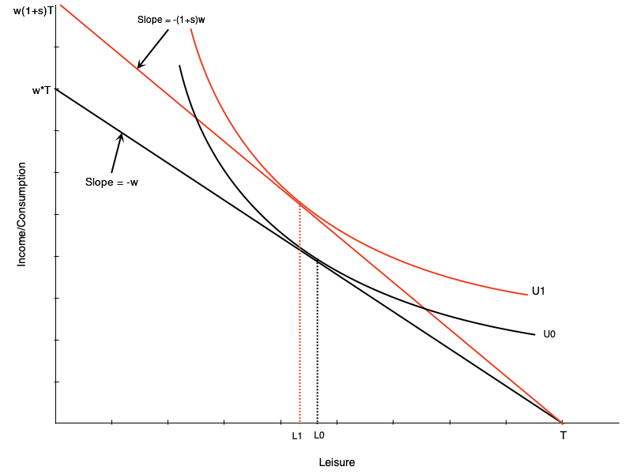
Budget line pivots up with subsidy
- Graph shows person working more
- But effect is theoretically ambiguous
- Income and substitution effects work in opposite directions
Wage Subsidies: Policy Implications
Advantages
- Less negative work incentives than welfare or NIT
- No reduction in effective wage rate
Disadvantages
- Do not provide income support to non-workers
- High earners qualify too, so it is a very expensive way to reach those in need
In practice:
- Pure wage subsidies are rare, because of that cost
- The fix is to target: pay the subsidy only to low earners
- Canada’s version is the Canada Workers Benefit
iClicker Question
Which program does more to draw people who are not working into the labour force?
A) A negative income tax, because it gives low-income people more money
B) A wage subsidy, because it pays only when you work, raising the return to the first hour
C) They are the same, because both raise the incomes of low earners
D) Neither, because both create income effects that reduce work
E) A negative income tax, because its clawback is below 100%
Refundable Tax Credits
Key Definitions
Non-refundable: can reduce tax owed to zero (but not below)
Refundable: can reduce tax owed below zero (results in payment)
Income-tested wage subsidies paid as refundable credits:
Canada Workers Benefit (CWB) – Canada, since 2007 (first called the WITB)
Earned Income Tax Credit (EITC) – US, since 1975, now one of the largest US income supports
Similar programs: the UK’s former Working Families Tax Credit and New Zealand’s In-Work Tax Credit
Popular across the political spectrum: targeted, pro-work, and cheap to run through the tax system, with no caseworkers
Source: Nichols & Rothstein (2015); Blundell (2006)
The Canada Workers Benefit, 2024
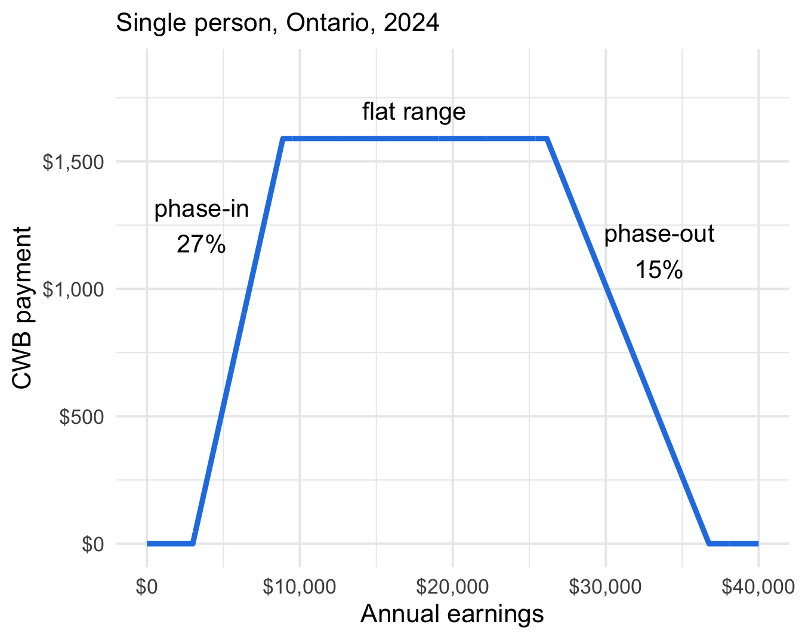
- Nothing until earnings pass $3,000
- Phase-in: 27 cents per dollar earned above $3,000
- Flat range: the $1,590 maximum, reached at about $8,900 of earnings
- Phase-out: clawed back at 15% of earnings above $26,149
- Gone entirely at $36,749
- A small program next to the EITC: low benefits and low thresholds
Tax Credits: Budget Constraint
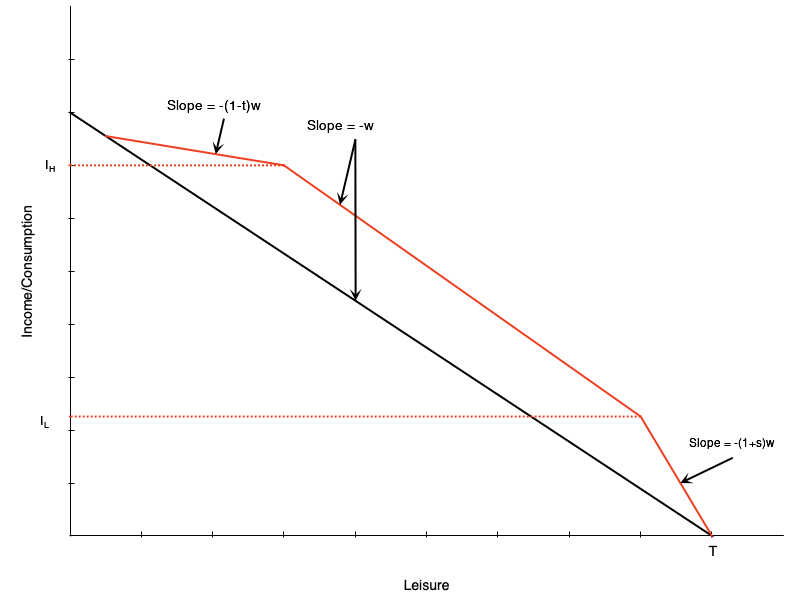
Three segments:
- Phase-in: Subsidy proportional to earned income, up to income \(I_L\)
- Flat range: Maximum benefit level, between \(I_L\) and \(I_H\)
- Phase-out: Benefit reduced with earned income above \(I_H\)
Combines elements of:
- Wage subsidy (phase-in)
- Demogrant (flat range)
- NIT (phase-out)
Tax Credits: Effect in Phase-In Range
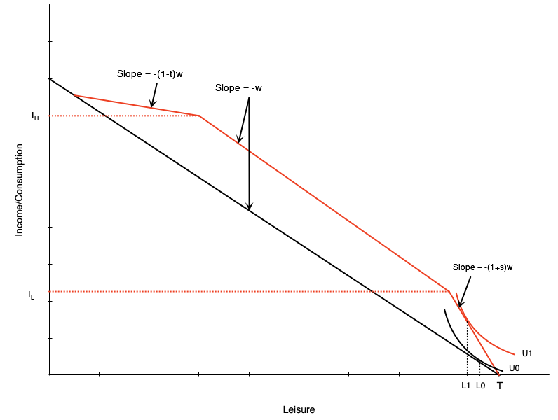
Person in phase-in range:
- Sees increase in effective wage
- Acts like pure wage subsidy
- Income and substitution effects in opposite directions
Work Incentive Effect
Effect on hours is ambiguous
Tax Credits: Effect in Flat Range
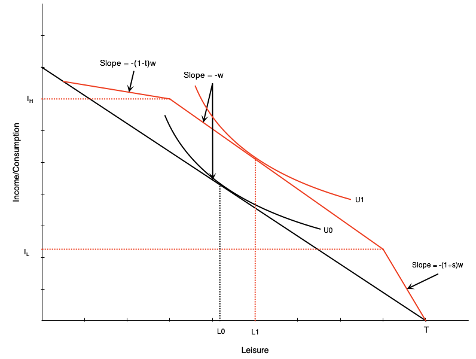
Person initially in the flat range:
- Tax credit gives maximum benefit
- Acts like pure income effect
- If leisure is normal good → reduce work hours
Tax Credits: Effect in Phase-Out Range
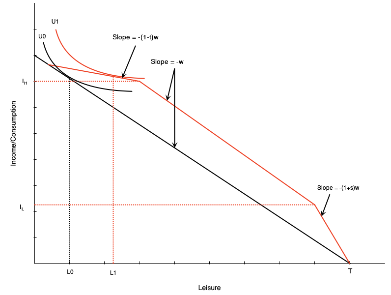
Person in phase-out range:
- Similar to negative income tax
- Income effect → reduce hours ↓
- Substitution effect → reduce hours ↓
Work Incentive Effect
Effect on work is unambiguously negative
Tax Credits and Participation
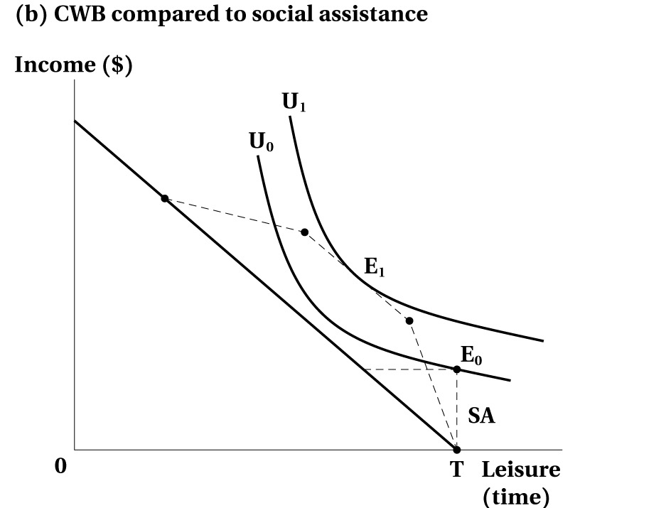
Source: Benjamin et al. (2026), Figure 4.8(b)
Key Result
Effect on hours is ambiguous, but the incentive to participate rises
- For a non-worker, the phase-in raises the return to the first hours of work
- Against social assistance with a 100% clawback, the contrast is sharper
- Without the credit: no work, collect assistance (\(E_0\))
- With it, if the benefit is large enough: work, on a higher indifference curve (\(E_1\))
iClicker Question
Ali is single, lives in Ontario, and earns $30,000 a year. Compared with no CWB, what does the CWB do to his incentive to work more hours?
A) Reduces it: the income and substitution effects both cut hours
B) Reduces it, through an income effect only
C) Ambiguous: a higher effective wage, but also an income effect
D) No effect: he earns too much to qualify
E) Increases it: the clawback raises the payoff to each extra hour
Empirical Evidence of Incentive Effects
Social Assistance in Ontario, 1980–2024
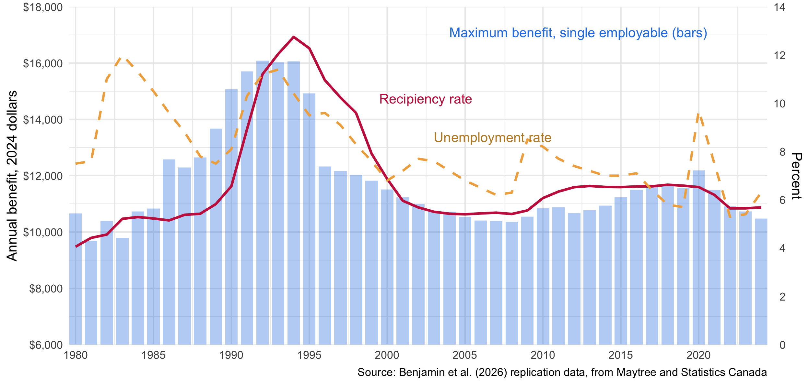
Correlation Is Not Causation
- Benefits and recipiency move together, but which way does causation run? We saw this problem in Chapter 2
- Reverse causation: a big caseload is a big constituency, and governments raised benefits to match
- Confounding: unemployment drives both; recessions push people onto assistance, booms pull them off
- Berg & Gabel (2015): across provinces, work requirements did the most to cut caseloads, 1986–2009
Key Definitions
Nonexperimental sources: responses to real policy changes, compared across people, places, or time
Experimental sources: programs that randomly assign who is offered the treatment
Quebec: A Discontinuity at Age 30
- Until August 1989: Quebec paid singles and couples without children far less if they were under 30
- Age 29: $185 a month; age 30: $507 a month
- Someone a few months short of 30 is otherwise much like someone a few months past it
- Comparing the two is a regression discontinuity design, as in Chapter 2
- Results:
- Fortin et al. (2004): the higher benefit led to much longer spells on assistance
- Lemieux & Milligan (2008): employment of male high-school dropouts fell about 4 percentage points past age 30 (1986)
Key Result
Two nonexperimental studies, one conclusion: higher benefits reduce work
iClicker Question
Which comparison gives the most credible estimate of how a higher welfare benefit affects work?
A) Employment in provinces with high benefits versus provinces with low benefits
B) Employment in one province before and after it raised benefits
C) Hours worked by welfare recipients versus non-recipients
D) People just under versus just over an age cutoff where benefits jump
E) Asking recipients whether the benefit made them work less
Child Benefits and Work
- National Child Benefit, 1998: some provinces effectively cut the clawback for welfare recipients
- Work incentives improved, which could explain much of the 1997–2000 caseload fall
- UCCB, 2006: compare parents of children 5 and under to parents of older children, before and after
- A difference-in-differences design, as in Chapter 2
- Married mothers cut both participation and hours, as the demogrant model predicts
- From the paper itself: participation of lower-educated married mothers fell 3.2 percentage points
- Divorced mothers worked more
- UCCB expansion and the CCB: large cuts in poverty, no sign of lower labour supply
- Source: Milligan & Stabile (2007); Schirle (2015); Koebel & Schirle (2016); Baker et al. (2023)
The Self-Sufficiency Project
Key Definition
Self-Sufficiency Project (SSP): a randomized Canadian experiment that paid an earnings supplement to long-term assistance recipients who left for full-time work
- Who: about 5,600 single parents, mostly mothers, on assistance for at least a year
- Where and when: New Brunswick and British Columbia, 1992–1999
- Design: random assignment to a program group or a control group
- The offer: leave assistance for a job of 30+ hours a week within a year, and collect a supplement
- Half the gap between earnings and a benchmark of $30,000 (NB) or $37,000 (BC)
- Paid for up to three years, as long as the work stays full time
- Roughly doubled what assistance paid
SSP: Results
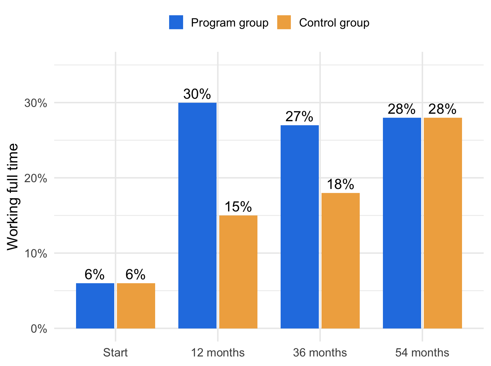
- Naive estimate: full-time work in the program group went from 6% to 30%, so 24 points
- But the control group got to 15% with no offer at all
- Experimental estimate: 30 − 15 = 15 points
- The gap closed after the offer ended
- 9 points at 36 months
- Gone by 54 months; assistance receipt equal by month 69
SSP: Why the Effect Faded
- Card & Hyslop (2005): the time limits created two incentives
- Establishment incentive: find full-time work within 12 months to qualify
- Entitlement incentive: once qualified, keep working to keep collecting
- Both end when the program ends
- Riddell & Riddell (2014): the program group went back to school less
- Less high-school completion, college or trade school, and university
- Work-first policies can trade long-run earning power for short-run jobs
Key Result
The SSP sped up the move from assistance to work while it ran; it did not change where people ended up
- Source: Card & Hyslop (2005); Riddell & Riddell (2014)
Summary
Summary
Income support programs:
- Provide crucial income support to various groups
- Can create work disincentives in some cases
- Must balance support needs against incentive effects
We examined several programs through the labour supply model:
- Three steps: constraint before, constraint after, compare choices
- Demogrants, social assistance, NIT, wage subsidies, and tax credits like the CWB
Evidence:
- Experiments and natural experiments beat simple correlations
- Both benefit generosity and labour market opportunities predict who relies on assistance
References
- Atkinson, A. B. (1998). Social exclusion, poverty and unemployment. In A. B. Atkinson & J. Hills (Eds.), Exclusion, employment and opportunity (CASEpaper 4, pp. 1–20). Centre for Analysis of Social Exclusion, London School of Economics.
- Baker, M., Messacar, D., & Stabile, M. (2023). Effects of child tax benefits on poverty and labor supply: Evidence from the Canada Child Benefit and Universal Child Care Benefit. Journal of Labor Economics, 41(4), 1129–1182.
- Benjamin, D., Foley, K., Gunderson, M., Lemieux, T., Schirle, T., & Skuterud, M. (2026). Labour Market Economics, 2026 Release. McGraw Hill. Chapter 4.
- Berg, N., & Gabel, T. (2015). Did Canadian welfare reform work? The effects of new reform strategies on social assistance participation. Canadian Journal of Economics, 48(2), 494–528.
- Blundell, R. (2006). Earned income tax credit policies: Impact and optimality. Labour Economics, 13(4), 423–443.
- Card, D., & Hyslop, D. R. (2005). Estimating the effects of a time-limited earnings subsidy for welfare-leavers. Econometrica, 73(6), 1723–1770.
- Fortin, B., Lacroix, G., & Drolet, S. (2004). Welfare benefits and the duration of welfare spells: Evidence from a natural experiment in Canada. Journal of Public Economics, 88(7–8), 1495–1520.
References (cont.)
- Hum, D., & Simpson, W. (1991). Income maintenance, work effort, and the Canadian Mincome experiment. Economic Council of Canada.
- Hum, D., & Simpson, W. (1993). Economic response to a guaranteed annual income: Experience from Canada and the United States. Journal of Labor Economics, 11(1, Part 2), S263–S296.
- Koebel, K., & Pohler, D. (2019). Expanding the Canada Workers Benefit to design a guaranteed basic income. Canadian Public Policy, 45(3), 283–309.
- Koebel, K., & Schirle, T. (2016). The differential impact of universal child benefits on the labour supply of married and single mothers. Canadian Public Policy, 42(1), 49–64.
- Laidley, J., & Tabbara, M.-D. (2024). Welfare in Canada, 2023. Maytree.
- Lemieux, T., & Milligan, K. (2008). Incentive effects of social assistance: A regression discontinuity approach. Journal of Econometrics, 142(2), 807–828.
References (cont.)
- Milligan, K., & Stabile, M. (2007). The integration of child tax credits and welfare: Evidence from the Canadian National Child Benefit program. Journal of Public Economics, 91(1–2), 305–326.
- Nichols, A., & Rothstein, J. (2015). The Earned Income Tax Credit (EITC). NBER Working Paper No. 21211.
- Riddell, C., & Riddell, W. C. (2014). The pitfalls of work requirements in welfare-to-work policies: Experimental evidence on human capital accumulation in the Self-Sufficiency Project. Journal of Public Economics, 117, 39–49.
- Royal Commission on the Economic Union and Development Prospects for Canada. (1985). Report. Minister of Supply and Services Canada.
- Schirle, T. (2015). The effect of universal child benefits on labour supply. Canadian Journal of Economics, 48(2), 437–463.
- Statistics Canada. Canadian Income Survey, 2022: Public Use Microdata File.
Social Assistance: Overview
Key Definition
Social assistance (income assistance, or welfare): means-tested provincial support for people with little or no other income